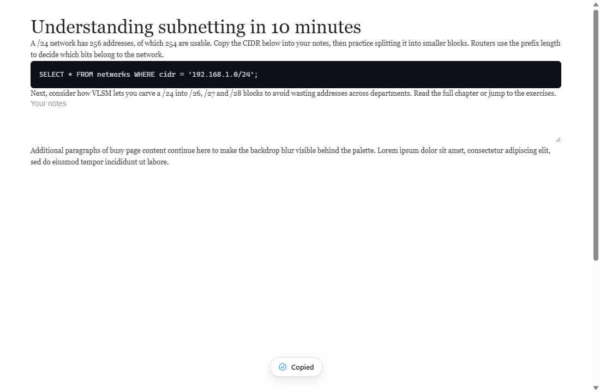
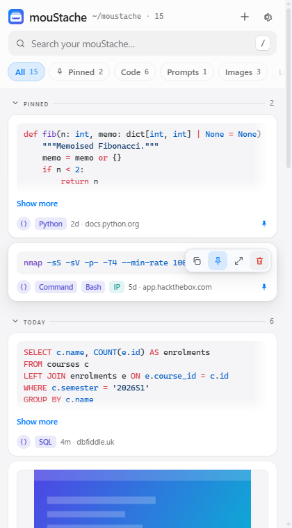
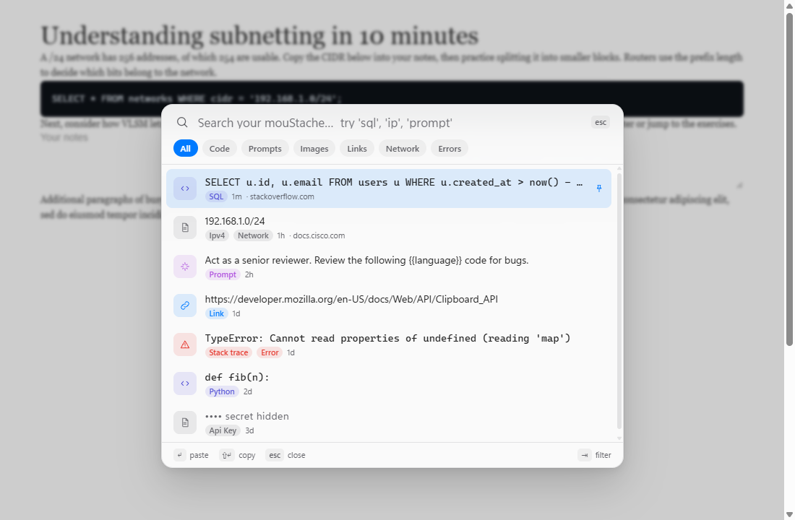
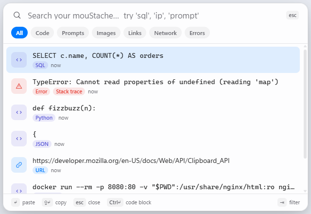

Code
15 languages, shell commands, JSON and YAML.
def fib(n: int) -> int:
return n if n < 2 else fib(n-1) + fib(n-2)mouStache saves what you copy, tags it as SQL, CIDR, stack trace or prompt, and puts it back with AltShiftV.
docker run -p 8080:80 nginx
10.0.12.0/22
TypeError: Cannot read properties of undefined (reading 'map')
SELECT * FROM networks WHERE cidr = '192.168.1.0/24';
SELECT c.name, COUNT(e.id) AS enrolments FROM courses c
Copy the next thing and the last one is gone. Your browser history forgets the rest. mouStache keeps every one of them.
Select and press CtrlC, or hit a site's own Copy button. mouStache saves it and says so.

Each copy is tagged on the spot, on your device. Code gets syntax highlighting and line numbers in the side panel.

The quick palette opens over what you are doing. Type to search, use the arrow keys, press Enter.

Enter pastes, ShiftEnter copies, CtrlEnter pastes a fenced code block. The desktop app does the same in VS Code, Cursor or a terminal.

Version 0.2.0 is a pre-release and not on a store yet, so you build it from source. You need Git and Node.js 24.
$ git clone https://github.com/Tways-study/mouStache.git
$ cd mouStache
$ npm install
$ npm run buildThen load .output/chrome-mv3 from chrome://extensions with Developer mode on. The README has the desktop installer steps.